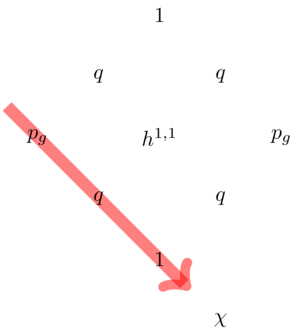
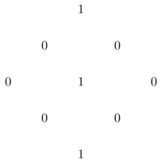
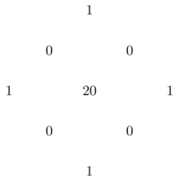
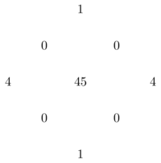
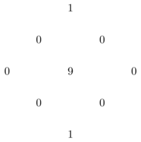

A crib sheet for surfaces
A crib sheet for surfaces
Every time I want to think about complex surfaces, I find I have forgotten what things like \(q(X)\) and \(p_g(X)\) mean and how they are related to things like \(c_1(X)\) and \(c_2(X)\). To save me carrying Barth-Peters-Van de Ven around with me, here are the basic definitions:
- \(q(X)\) (irregularity) is the Hodge number \(h^{0,1}\),
- \(p_g(X)\) (geometric genus) is the Hodge number \(h^{0,2}\),
- \(\chi(X)\) (holomorphic Euler characteristic) is the alternating sum \(h^{0,2}-h^{0,1}+h^{0,0}\),
so the Hodge diamond looks like this:

Characteristic classes and intersection form
A complex surface has characteristic numbers \(c_1^2\), \(c_2\) and \(p_1\). The class \(c_2\) equals the topological Euler characteristic of \(X\). Since \(TX\otimes\mathbf{C}\cong TX\oplus (TX)^*\) we get \[p_1(X)=-c_2(TX\otimes\mathbf{C})=c_1^2(X)-2c_2(X).\] The Hirzebruch signature theorem tells us that the signature is given by \(\sigma=p_1/3=(2c_2-c_1^2)/3\). We write \(b^+\) and \(b^-\) for the dimensions of the positive and negative eigenspaces of the intersection form.
One can relate the invariants \(q\), \(p_g\) and \(\chi\) to the Chern numbers \(c_2\), \(c_1^2\) and the number \(b^+\) as follows.
- By Hirzebruch-Riemann-Roch, we have \(\chi=\frac{1}{12}(c_1^2+c_2)\) (which equals the Todd class of \(X\)). This is called Noether's formula.
- By the Hodge index theorem, the negative part of the intersection form is of dimension \(h^{1,1}-1\), so we have \(b^+=2p_g+1\),
Examples
\(\mathbf{CP}^2\)
The complex projective plane has \(q=p_g=0\), \(\chi=1\), \(b^+=1\), \(c_1^2=9\) and \(c_2=3\). The Hodge diamond is:

\(K3\)
A K3 surface has \(q=0\), \(p_g=1\), \(\chi=2\), \(b^+=3\), \(c_1^2=0\) and \(c_2=24\). The Hodge diamond is:

Hypersurface of degree \(d\) in \(\mathbf{CP}^3\).
Generalising the previous two examples (\(d=1,4\)), the hypersurface of degree \(d\) in \(\mathbf{CP}^3\) is simply-connected (by the Lefschetz hyperplane theorem) so \(q=0\), and has \(c_1^2=d(d-4)^2\), \(c_2=d(d^2-4d+6)\) (see e.g. here for how to do this computation). This means \[\chi=\frac{1}{6}d(d^2-6d+11)=p_g+1.\] For example, the Hodge diamond of the quintic surface (\(c_1^2=\chi=5\), \(p_g=4\), \(c_2=55\)) is therefore:

Minimal surfaces of general type
Geography
The characteristic numbers of minimal surfaces of general type satisfy some further inequalities:
- Noether's inequality: \[p_g\leq \frac{1}{2}c_1^2+2.\] When \(q=0\), we have \(\frac{1}{12}(c_1^2+c_2)=\chi=p_g+1\) and this inequality becomes \[c_2\leq 5c_1^2+36.\]
- The Bogomolov-Miyaoka-Yau inequality: \[c_1^2\leq 3c_2.\]
- \(c_1^2+c_2\equiv 0\mod 12\) (by Noether's formula).
- \(c_1^2\) and \(c_2\) are positive.
If we plot the region bounded by these inequalities (assuming \(q=0\)) it looks like this:

(Numerically) Godeaux surfaces (\(p_g=q=0\), \(c_1^2=1\))

These can have \(H_1(X;\mathbf{Z})=\mathbf{Z}/m\) for \(m=1,2,3,4,5\). The original Godeaux surface, with \(H_1=\mathbf{Z}/5\), is obtained from the Fermat quintic \(x_0^5+\cdots+x_3^5=0\) by quotienting by the free \(\mathbf{Z}/5\)-action where a fifth root of unity \(\mu\) acts as \[\mu(x_0,\ldots,x_3)=(x_0,\mu x_1,\mu^2 x_2,\mu^3 x_3).\] A simply-connected Godeaux surface was found by Barlow. For more on numerically Godeaux surfaces, see this paper by Reid.
Horikawa surfaces (on the Noether line)
These have been studied by Horikawa. See this summary for much more information about these surfaces.
Ball quotients (on BMY line)
Yau proved that surfaces on the BMY line are all uniformised by the complex hyperbolic ball.
Update: See also this page of Pieter Belmans and Johan Commelin for an interactive complex surface explorer!